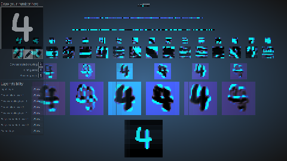
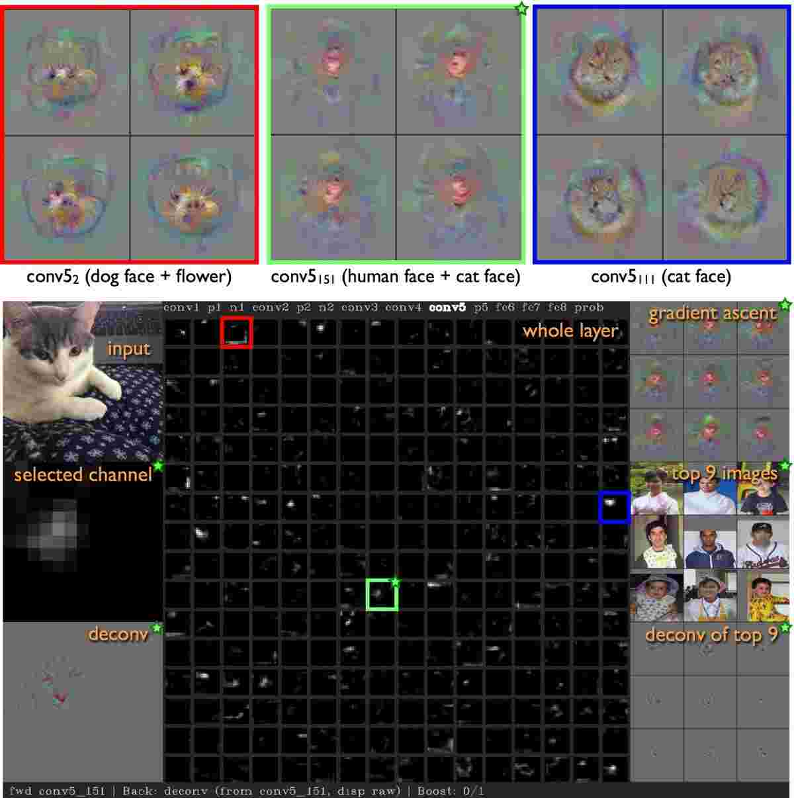
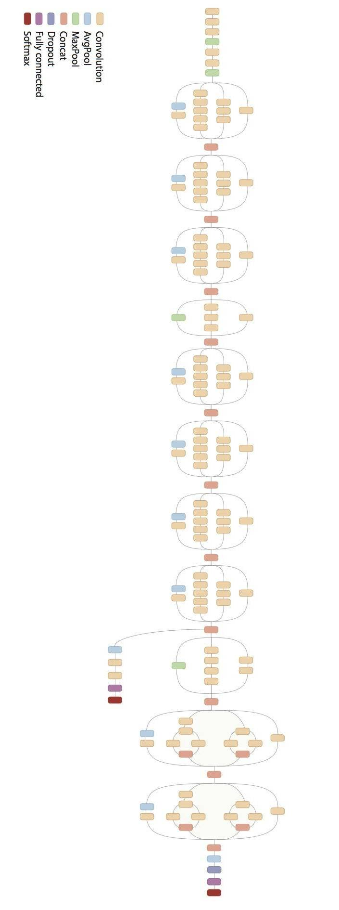

Please wait, while the deck is loading…
@svg: logos/affiliations.svg 400 100
- Objectifs
- comprendre le « deep learning » pour l'image
- pratiquer : numpy, scikit-learn, tensorflow
- Déroulement du workshop // disclaimer: non-exhaustive
- « cours »
- pratique dans un « notebook » Jupyter
- Ressources
- slides et notebooks github.com/twitwi/2017-mixit-tensorflow
- site Tensorflow
- Attributions
- wikipedia, [creative commons et autres media](#attrib)
## Menu du jour {#the-overview}
- Apprentissage automatique {ml}
- Frameworks et Graphes de Calculs {tfgraph}
- Combinaison linéaire, Perceptron, Activation {percep}
- Optimisation et Descente de Gradient (ou autre) {optim}
- Perceptron Multicouches, Apprentissage Profond {deep}
- Convolutions et Deep Learning {convnet}
- Sur les Épaules des Géants {pretrain}
# @copy: #the-overview: %+class:HERE: .ml
# Machine Learning Apprentissage Automatique ## Question : Quelle espèce d'Iris ? {image-full bottom-left darkened /black-bg /no-status}
⇒
Sepal length: 5.1 Sepal width: 2.5 Petal length: 4.2 Petal width: 1.0Expected Label: “Iris Setosa”
qui calcule la *sortie* pour n'importe quelle *entrée* {step2} 3. « profit! » {slide} // actually fast to apply usually 2. @anim: .step2 La machine *apprend* à *généraliser*
à partir d'un nombre limité d'exemples,
à la manière des humains. {center slide bordered} ## Différentes Tâches - Apprentissage supervisé : des annotations sont données {slide} - classification : trouver l'étiquette (classe, ...) d'un exemple - régression : trouver une valeur cible (âge, prix, poids, ...) - Apprentissage non-supervisé : pas d'annotations {slide} - clustering : grouper les choses - pattern mining : trouver des structures récurrentes - détection d'anomalie: trouver des valeurs « aberrantes » ## Notations - En général : - $X$ : entrée (caractéristiques) - $Y$ : sortie (valeur ou classe) - $w$ : poids, paramètres qui seront appris - $b$ : biais, paramètres qui seront appris - $\theta$ : ensemble des paramètres ($w$, $b$, ...) - Ensembles de données // cf slide suivant - $train$ : ensemble d'apprentissage (pour entraîner le système) - $valid$ : ensemble de validation (pour éviter le sur-apprentissage) - $test$ : ensemble de test (pour évaluer le système) ## Le « sur-apprentissage » @svg: media/overfitting.svg 800px 500px - @anim: #points | #linear | #piecewise | #ok - {notes} - example: surface of a flat vs price - in the end, there is no best solution # Régression et Classification
avec Scikit Learn **01** {pratique} # @copy: #the-overview: %+class:HERE: .tfgraph # Frameworks,
Graphes de Calculs ## Frameworks de Machine Learning {libyli} - Généraux - scikit-learn - Weka - Hadoop, spark, MLlib, … - … - Orientés « deep learning » - Theano, Pylearn2, lasagne, … // Montréal - caffe // berkeley - Torch7 // F.A.I.R. - Tensorflow // Google (nov 2015) - Keras // wrapper over theano or tensorflow - MXnet // open community - … ## Graphes de Calculs - Calculs « classiques » (numpy, etc.) ```python N = 1000 # nombre de points D = 10 # nombre de caractéristiques x = np.random.randn(N, D) # données au hasard... w = np.random.randn(D) # poids au hasard b = np.random.randn(1) # biais au hasard # opérations élément par élément, avec broadcasting ypred = np.sum(w*x, axis=1) + b {dense slide} ``` - Graphes de calcul (theano, tensorflow, etc.) ```python x = tf.placeholder(tf.float32, shape=[None, D]) # entréees w = tf.Variable(tf.truncated_normal([D], stddev=0.05)) # poids b = tf.Variable(tf.constant(0.05, shape=[1])) # biais # opérations élément par élément, avec broadcasting ypred = tf.reduce_sum(x * w, axis=1) + b {dense slide} ``` ## Graphe de calcul en Tensorflow ```python x = tf.placeholder(tf.float32, shape=[None, D]) # entréees w = tf.Variable(tf.truncated_normal([D], stddev=0.05)) # poids b = tf.Variable(tf.constant(0.05, shape=[1])) # biais # opérations élément par élément, avec broadcasting ypred = tf.reduce_sum(x * w, axis=1) + b {dense} ``` - Le code ne fait que créer un graphe symbolique - @anim: - #y,#subsquared,#reduceprint,#intermediate + .grr + - @anim: #x | #w, #b | #mul | #sumadd | #ypred - *@svg: media/compute-graph.svg 800 230 {grr}* {no} - Évaluation du graphe {slide} ```python X = np.random.randn(N, D) # données au hasard... with tf.Session() as sess: res = sess.run(ypred, feed_dict={ x: X }) # calcule "ypred" sachant que "x" vaut "X" print(res) {dense slide} ``` ## Utilisation d'un graphe Tensorflow {pratique nobg} - @anim: #x,#w,#b,#mul,#sumadd,#ypred @svg: media/compute-graph.svg 800 230 {grr whitebg no} - $err = \sum_i (y^i - y_{pred}^i)^2$ {slide} - @anim: #y | #subsquared | #reduceprint | #intermediate - À vous ! **02** {slide} - calcul de l'erreur totale - évaluation du graphe - vérification des tailles (shape) # @copy: #the-overview: %+class:HERE: .percep # Combinaison linéaire, Perceptron, Activation ## Perceptron et fonction d'activation // à la base une machine physique - $o = \varphi\left(\sum_{i=0}^n w_i x_i\right)$ (avec $x_0 = 1$) {dense} - vu autrement :
« $o = seuil(a.x + b) = seuil(w_1 x_1 + w_2 x_2 + \cdots + b)$ »{dense} # @copy: #the-overview: %+class:HERE: .optim # Optimisation,
Descente de Gradient ## Apprentissage = Optimisation {libyli} - $o = f(x, w)$ - $x, y$ est un exemple d'entrainement - $o$ est la sortie obtenue, avec les paramètres $w$ - Objectif de l'apprentissage - à partir d'exemples annotés, $x$ et $y$ correspondant - minimiser la somme des erreurs $err(y, o) = dist(y, f(x, w))$ - **trouver les meilleurs paramètres $w$**
*(NB: attention quand même au sur-apprentissage) {dense}* @svg: media/gradient-empty.svg 800 180 {grad} @anim: .grad ## Descente de Gradient *(suivre la pente){dense}*
@svg: media/gradient.svg 390 250 {grad}
@svg: media/wikipedia/Gradient_descent.svg 300 250 {grad2d}


(plus tard) {pratique} # @copy: #the-overview: %+class:HERE: .deep # Perceptron Multicouches,
*Deep Learning*,
Apprentissage de Représentation ## Perceptron Multicouches @svg: media/mlp.svg 800 450 - $o = \varphi(W^4 \times \varphi(W^3 \times \varphi(W^2 \times \varphi(W^1 \times X))))$ {eqs} - @anim: #percep | #per1 | #per2 | #per3 | #one2 | #l3 | #one3,#l4 | #one4,#o | .eqs ## Apprentissage de Représentation @svg: media/mlp-long.svg 800 150 - Deep Learning / Representation Learning {libyli} - au lieu - d'extraire des caractéristiques « à la main » - d'apprendre le classifieur - on va - donner à l'algorithme l'entrée brute (ex: les pixels) - laisser l'algorithme trouver les caractéristiques pertinentes - apprendre de bout en bout - il faut avoir compris son problème (architecture), et avoir - des données - de la puissance de calcul (CPU, GPU) - un framework (optimiseur, dérivation, …) - des fonctions dérivables pour le gradient de la composition : $(f \circ g)'(x) = f'(g(x)) . f(g'(x))$ # Un MLP en Tensorflow **03** {pratique} // combien de paramètres # @copy: #the-overview: %+class:HERE: .convnet # Convolutions et Deep Learning ## Particularité des images {libyli} - Exemple : ségmentation sémantique - pour chaque pixel, une des 30 classes - entrée/sortie en 2000x1000 = 2MPixels = 2 million de dimensions - @anim: %+class:FS:video | %play:video | %pause:video | %-class:FS:video - Perceptron simple couche - nombre de paramètres ? - Malédiction de la dimension - explosion du nombre de paramètres - apprentissage impossible - risque de sur-apprentissage - {no noslide} - Particularité des images - invariance en translation - dépendances locales ## Convolutions et Couche de Convolution {libyli} - Convolution - opération entre 2 fonctions : $(f * g )(t) = \int_{-\infty}^{\infty} f(\tau) g(t - \tau) d\tau {dense}$ - application d'un filtre à une image (comme dans Photoshop / gimp) - corrélation entre un motif et une image, essayer - Couche de convolution : on apprends les filtres ! - entrée : $k$ « feature maps » (ex, les 3 canaux d'une image couleur) - sortie : $l$ « features maps » de même taille (ex, image filtrée) - paramètres, dans le cas de filtres $3\times 3$
 - nombre filtres : $k.l$ ⇒ $9.k.l$ (poids)
- nombres de biais : $l$ ⇒ $l$ paramètres en plus
- @anim: .typical
- nombre filtres : $k.l$ ⇒ $9.k.l$ (poids)
- nombres de biais : $l$ ⇒ $l$ paramètres en plus
- @anim: .typical
 # Un « Convnet » en Tensorflow **04** {pratique}
## Comprendre ce qui est Appris
- Travail à la maison
- reconnaissance de chiffres
- http://scs.ryerson.ca/~aharley/vis/
- http://scs.ryerson.ca/~aharley/vis/conv/
- deepvis
- http://yosinski.com/deepvis
- https://www.youtube.com/watch?v=AgkfIQ4IGaM
# Un « Convnet » en Tensorflow **04** {pratique}
## Comprendre ce qui est Appris
- Travail à la maison
- reconnaissance de chiffres
- http://scs.ryerson.ca/~aharley/vis/
- http://scs.ryerson.ca/~aharley/vis/conv/
- deepvis
- http://yosinski.com/deepvis
- https://www.youtube.com/watch?v=AgkfIQ4IGaM


# @copy: #the-overview: %+class:HERE: .pretrain
# Sur les Épaules des Géants
## Les réseaux d'aujourd'hui {libyli}
-  {no}
- Architectures
- réseaux convolutionnels
- parfois un MLP à la fin
- de ~ 20 à 1000 couches
- millions de paramètres
- des fermes de GPU (carte graphiques) à 1500€
- des semaines d'entraînement (sur ImageNet)
- Éléments
- convolutions $3\times 3$ et $1\times 1$
- activation ReLU
- max-pooling
- dropout
- batch-normalization
- connections résiduelles
- Optimiseur : Adam, rmsprop, SGD
## Réutilisation des réseaux {libyli}
- Step 1 : récupérer le code ⇒ github
- Step 2 : récupérer le modèle (les poids appris) ⇒ github
- Step 3 : le code, selon les cas :
- utiliser le modèle tel quel
- le « fine-tuner » sur nos données
- utiliser le modèle pour extraire des caractéristiques
- faire de « l'adaptation de domaine »
- Extraction de caractéristiques
- charger le modèle
- couper les dernières couches (spécifiques)
- utiliser les activations comme caractéristiques
# Classification et Extraction de Caractéristiques avec le Réseau InceptionV3 **05** {pratique}
# @copy: #the-overview
## Conclusions {image-full bottom-left darkened /black-bg /no-status}
/ − − automatically replaced by the title